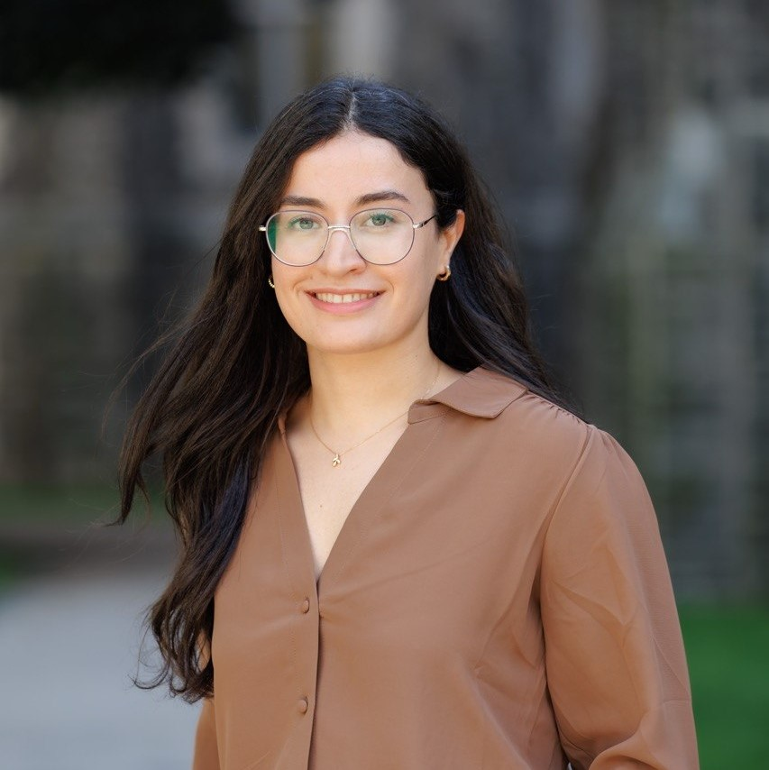

Robab Eynloo
PhD Candidate in Management Science
DeGroote School of Business · McMaster University
Researcher, problem solver, and lifelong learner. I study how optimization can make public services more efficient and equitable.

About Me
I am a PhD candidate in Management Science at the DeGroote School of Business, McMaster University. My research examines the trade-offs between efficiency and fairness in public facility location and capacity planning, particularly under demand uncertainty. I am interested in developing mathematical models that help decision-makers build more accessible and equitable service systems.
Before my doctoral studies, I worked as a Business Intelligence Developer at Digikala, applying analytics, optimization, and data-driven methods to operational challenges.
Research
Efficiency & Fairness in Facility Location
Optimization models balancing total accessibility and equitable service provision.
Optimization under Uncertainty
Two-stage stochastic programming, sample average approximation, distributionally robust optimization, and risk-aware planning.
Research Interests
Publications and working papers will be added here as bibliographic details are finalized.
Education
PhD, Management Science — McMaster University (2023–present; expected 2028)
MSc, Industrial Engineering — University of Tehran (2017–2020)
BSc, Industrial Engineering — K. N. Toosi University of Technology (2013–2017)
Professional Experience

Graduate Research Assistant · DeGroote School of Business
2023–present
Mathematical optimization, mixed-integer reformulation, stochastic programming, and robust decision-making for public service planning.
Business Intelligence Developer · Digikala
2020–2023
Designed analytics dashboards, automated data pipelines, developed customer segmentation models, and supported distribution center planning.
Technical Skills
Teaching
Graduate teaching experience at DeGroote School of Business in Operations Modeling and Analysis, Supply Chain Management, Decision Making with Analytics, and Business Data Analytics. I am also scheduled to teach Python for Data Analytics (COMMERCE 3DA3) in Winter 2027.
Certifications
Selected professional learning and verified coursework.


Awards & Honours
DeGroote International Graduate PhD Student Scholarship (2025)
DeGroote School of Business Entrance Scholarship (2023)
Ranked 59th among more than 10,000 participants in Iran's national MSc Industrial Engineering entrance examination (2017).
Beyond Academia
When I'm not working on research or solving optimization problems, I love staying active, exploring the outdoors, and learning new things.
Fitness has become an important part of my life, and I'm currently working toward mastering a handstand—an exciting challenge that requires strength, balance, patience, and plenty of practice!
I started learning guitar two years ago, and I'm enjoying the process of improving my musical skills, one chord at a time.
I'm an outdoor enthusiast at heart. Whether it's hiking through forests, camping, discovering new trails, or simply spending time surrounded by nature, being outdoors is one of my favourite ways to recharge.
I'm also an avid reader who loves getting lost in stories that explore human nature, identity, and the complexities of life. Two of my all-time favourite books are Demian by Hermann Hesse and The Unbearable Lightness of Being by Milan Kundera. Both have left a lasting impression on me and deepened my appreciation for literature that challenges the way we see ourselves and the world.
I believe life is about continuous learning, embracing challenges, and finding joy in the journey—both inside and outside academia.
Get in Touch
Email: eynloor@mcmaster.ca